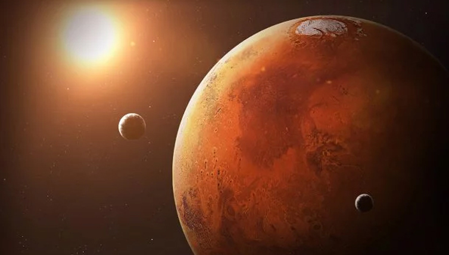

Марс первісно італійський бог родючості, рослинності й дикої природи; вважалося, що він може наслати загибель урожаю та загибель скоту або відвернути їх. Пізніше був утотожнений з грецьким Аресом і став богом війни. Первісно входив до трійки богів, які очолювали давньоримський Пантеон (разом із Юпітером та Квіріном). За римською легендою, близнюки Ромул та Рем є його синами (Рея Сільвія народила синів від Марса). Тому Марс вважався покровителем Риму. Богу війни було присвячено храм на Марсовому полі у Римі. На честь Марса називався місяць Martius у Стародавньому Римі (березень у сучасній українській мові). Священними тваринами Марса вважаються вовк і дятел.
Бога шанували з епітетами «переможець», «розширювач імперії», «миротворець». У західних римських провінціях із образом Марса пов'язували головних богів територіальних і племінних громад. Саме тому деякі дослідники вважали, що ранні римські уявлення про Марса як про верховне божество продовжували жити в народі.

Марс — планета земного типу з розрідженою атмосферою. На Марсі є метеоритні кратери, як на Місяці, вулкани, долини і пустелі, подібні до земних. Тут розташована гора Олімп (22 456 м), найвища відома гора в Сонячній системі, і Долини Марінера — величезна рифтоподібна система каньйонів. На додаток до особливостей — період обертання Марса і сезонні цикли також подібні до земних.
Скажіть, а чи замислювались ви колись про те, що можете мати новий дім? Ні, не інший будинок, кімнату, чи квартиру, а іншу планету. Ніколи? Ви мене здивували. Адже людина від природи прагне пізнати незвідане. Космос – такий близький, але водночас далекий – завжди вабив людей. Не один раз науковці з усіх кутків світу ставили перед собою вічні запитання: чи безмежний Всесвіт? Чи самотні ми у ньому? Чи існують інші форми життя? Невипадково так багато науково-фантастичних творів написано про відкриття таємниць космосу, так багато вчених та інженерів присвятили своє життя пізнанню космічної далечини. Нарешті люди зрозуміли: космос не можна підкорити, його можна тільки глибше пізнати, щоб використати ці знання на користь природи та Землі. Ніхто не знає, що чекає на нас у майбутньому, тож ми повинні бути готові до всього. Колонізація Марса – один із етапів космічної експансії людства, що включає в себе попереднє теоретичне підґрунтя проекту, будівництво різних комплексів та споруд на Марсі і заселення у них людей. Вона також включає зміну кліматичних умов планети для приведення атмосфери, температури та екологічних умов до стану, придатного для проживання земних рослин і тварин. На першому етапі – створення маленьких «марсиків» – поселень на планеті